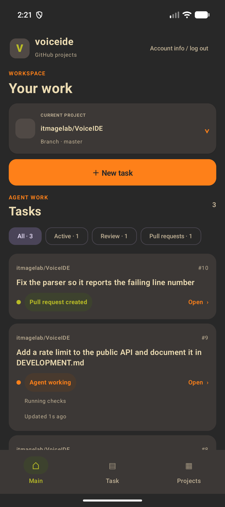
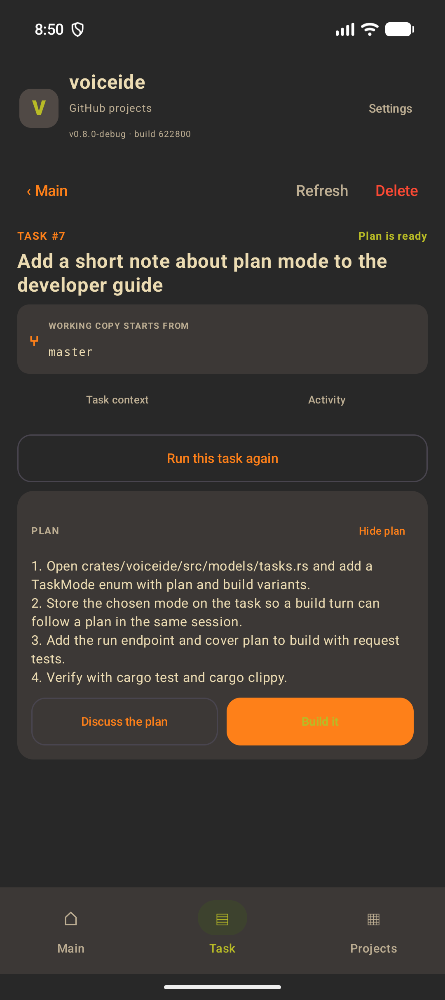
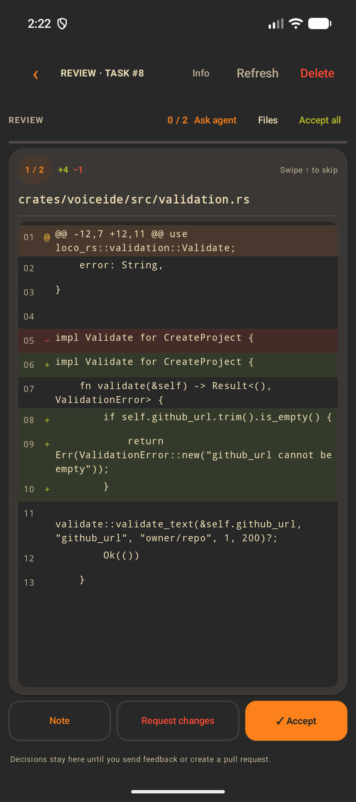
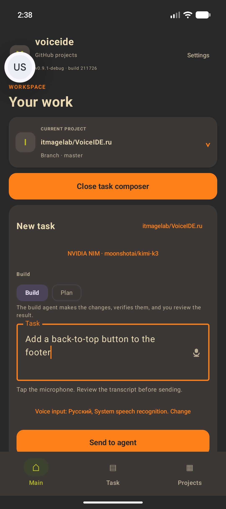
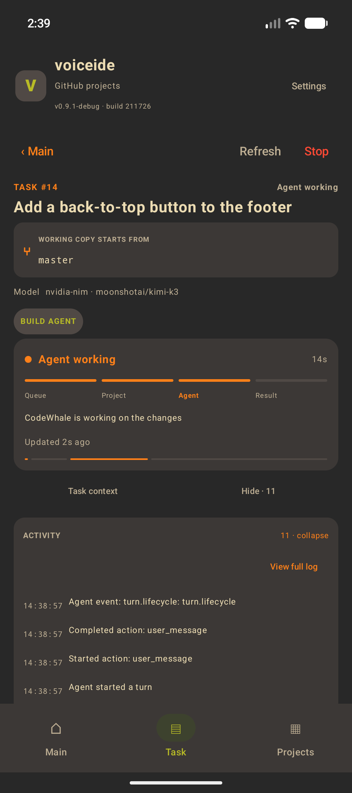
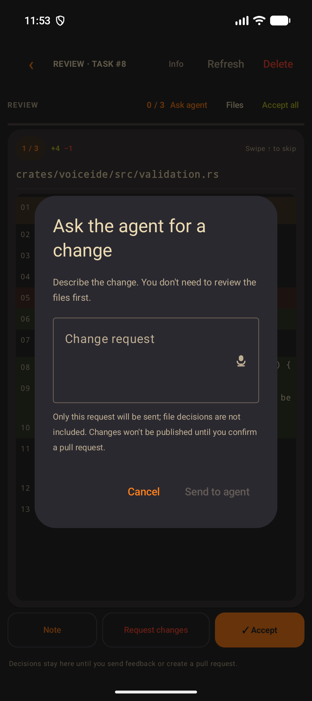
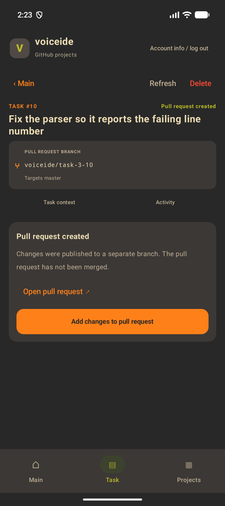
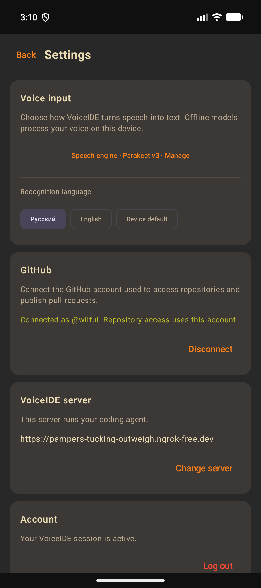

Удобная диктовка
Надиктуйте новую задачу, правку или комментарий к файлу. Текст расшифровки можно отредактировать перед отправкой.
Задача → План → Правки → Pull Request
VoiceIDE поручает задачи ИИ-агенту, следит за ходом работы и показывает наглядные изменения по каждому файлу. Код попадает в репозиторий только после вашего одобрения.



Простой сценарий
ИИ-агент пишет код в изолированном окружении. Каждая правка и отправка изменений выполняются только по вашей команде.
Авторизуйтесь через GitHub и выберите проект — публичный или приватный.
Надиктуйте задачу голосом или напишите текстом. Выберите режим: составить план изменений или сразу писать код.
Вы в реальном времени видите статус выполнения задачи и список файлов, над которыми работает ИИ.
Изучите разницу в коде: примите изменения, попросите агента доработать результат или оставьте комментарий.
Подтвердите отправку, и приложение автоматически создаст ветку и готовый pull request на GitHub.
$ voiceide task new --dictate ✓ распознано: «добавь экран настроек сервера» $ voiceide task run --mode plan ✓ план готов · 3 файла · 2 проверки $ voiceide task run --mode build ✓ сборка завершена · +128 −14 $ voiceide review --accept-all ✓ все файлы приняты $ voiceide pr create ✓ pull request #42 → master
$ voiceide task new --dictate ✓ heard: "add a server settings screen" $ voiceide task run --mode plan ✓ plan ready · 3 files · 2 checks $ voiceide task run --mode build ✓ build finished · +128 −14 $ voiceide review --accept-all ✓ all files accepted $ voiceide pr create ✓ pull request #42 → master
Вы можете сначала обсудить пошаговый план изменений, а затем запустить написание кода в один клик.
Возможности
Управляйте процессом с экрана смартфона. Все изменения, коммиты и pull request создаются в вашем проекте под вашей учётной записью.
Надиктуйте новую задачу, правку или комментарий к файлу. Текст расшифровки можно отредактировать перед отправкой.
Распознавание голоса работает прямо на телефоне. Аудио никуда не отправляется и не сохраняется на серверах.
Агент проанализирует проект и предложит пошаговый план изменений. Обсудите его голосом перед тем, как писать код.
Выбирайте подходящую ИИ-модель для каждой задачи — настройки сохранятся на протяжении всего обсуждения.
Следите за каждым действием ИИ-агента. Пароли, ключи доступа и личные данные автоматически скрываются в логах.
Проверяйте изменения по каждому файлу отдельно: принимайте правки, просите переделать или пишите замечания.
Агент помнит всю историю обсуждения и предыдущих правок, продолжая работу в рамках одной сессии.
Новые ветки и pull request создаются только после вашего одобрения. Автоматических изменений в основной ветке нет.
Интерфейс
Интерфейс мобильного приложения на экране смартфона.





Запуск
Начните работу за пару минут: используйте наш демонстрационный сервер или запустите собственный.
Идеально для быстрого знакомства. Оцените возможности приложения мгновенно, без настройки серверов.
Написать авторуВы можете развернуть серверную часть на своем оборудовании одной Docker-командой. Потребуется свой домен и открытые порты.
git clone git@github.com:itmagelab/VoiceIDE.git
cd VoiceIDE
cp .env.example .env # настройки и ключи
podman compose up --detach
Локальный сервер доступен на порту 8080, а для внешних подключений автоматически настраивается безопасное соединение.
Приложение находится в стадии закрытого тестирования. Напишите автору, чтобы получить ссылку на скачивание. Актуальная версия — v0.9.1.
Безопасность
Все ключи доступа надежно шифруются. При отключении учетной записи все данные полностью удаляются.
Мы не храним и не передаем записи вашего голоса. Офлайн-распознавание происходит прямо на смартфоне.
ИИ-агент работает в изолированном окружении. Ни одно изменение не попадет в проект без вашего подтверждения.
Все пароли и ключи доступа автоматически скрываются в отчетах. История ваших запросов остается конфиденциальной.
Действия ИИ-агента ограничены только безопасными командами. Проект защищен от вредоносного кода.
Все коммиты, ветки и pull request создаются строго под вашей учетной записью GitHub и только в выбранном проекте.
Подключите VoiceIDE к своему проекту и пишите код на ходу. План, генерация, проверка и создание PR — в едином удобном интерфейсе.
Доступ к приложению предоставляется по запросу.